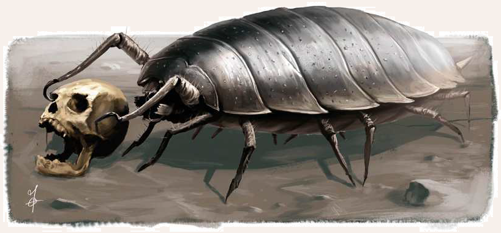

Dieses schaurige Ungetüm aus der lichtlosen Welt unter der Erde ist nicht mehr, aber auch nicht weniger als eine hundegroße Assel. Ihre messerscharfen und ungemein kräftigen Greifzangen bedeuten eine beachtliche Gefahr für Leib und Leben, ihr harter Panzer ist eine Meisterprüfung für Schwert oder Axt und ihre bloße Erscheinung erprobt Mut und Moral. Gruftasseln genießen einen ausgesprochen schlechten Ruf. So sollen sie wahre Scheusale sein, die sich auf Menschen stürzen, sobald sie diese wahrnehmen. Auch die Zwerge berichten nichts Gutes von den Vielbeinern: In alten Legenden soll es weit mehr Gruftasseln gegeben haben, die die heimatlichen Stollen der Angroschim durchstreiften, immer auf der Suche nach Fressen. Sie sollen Diener der Drachen oder anderer insterer Mächte sein. Tatsächlich bevorzugen Gruftasseln verlassene Gegenden und legen sich nur mit Zweibeinern an, sofern diese sie bedrohen oder eine Gruftassel gerade völlig ausgehungert ist. Sie sind nicht besonders intelligent und lassen sich von ihren Instinkten leiten.
Verbreitung
Ob die Gruftassel nun ein in die Schatten herabgesunkenes Vermächtnis des siebten Zeitalters ist, in dem die Vielbeinigen Dere beherrschten oder ob sie schlicht ein Laune Sumus darstellt, ist nicht bekannt.
Sicher ist jedoch, dass sich das mienenlose und ruckartig bewegende, von einem unheimlichen Klickern und Klacken begleitete Ungetüm, vor allem in Höhlensystemen, Ruinen und Grüften, aber auch in Katakomben und Kanalisationen einnistet. Hauptsache es ist dunkel und feucht.
Diese Wesen scheinen auf allen Kontinenten verbreitet zu sein.
In Myranor kann man ihnen ebenso begegnen wie in Uthuria.
Dort soll es sogar noch größere Exemplare geben und von intelligenten Vertretern dieses Tieres ist die Rede.
Ob es sich dabei aber um Seemannsgarn handelt oder dies gar der Wahrheit entspricht, ist nicht bekannt.
Riesengruftasseln wurden allerdings schon von Uthuria-Questadoren gefangengenommen und in die Bal-Honak-Arena nach Al`Anfa gebracht, wo sie sich als wilde Bestien gegen Gladiatoren behaupten mussten.
Lebensweise
Gemeinhin ist die Gruftassel ein geduldiger Jäger, der darauf wartet, dass sich ein Beutetier zu weit in einen der dunklen Gänge wagt und sich in den unterirdischen Labyrinthen, die sie bevorzugt bewohnt und in denen sie jeden Winkel kennt, heillos verirrt und schließlich verendet.
Zwar sind die Gruftasseln vornehmlich Aasfresser, aber allein schon ihrer Größe wegen fürchten sie Menschen, Elfen oder Zwerge in keinster Weise und sind bei passender Gelegenheit gerne bereit, ihren Geländevorteil zu nutzen und ihren Speiseplan zu erweitern.
In der Regel fressen sie Mäuse, Ratten und Insekten, grundsätzlich alles, was kleiner ist als sie und was sie erwischen können.
Sie meiden das Sonnenlicht, obwohl es ihnen nichts anhaben kann, es nicht einmal Schmerzen zufügt.
Sie mögen es einfach nicht.
Deshalb wird man den Gruftasseln nur an dunklen Orten begegnen können.
Über das Alter, das eine Gruftassel erreichen kann, ist wenig bekannt, da es kaum Forscher gibt, die sich mit diesen Tieren beschäftigen.
Sie werden jedoch deutlich älter als ihre kleineren Verwandten, die Kellerasseln (die übrigens auch auf dem Speiseplan der Gruftassel stehen).
Man schätzt das Höchstalter der Gruftasseln auf zwanzig Jahre.
Die Brut einer Assel besteht meistens aus einem Dutzend Tieren, von denen jedoch maximal die Hälfte das Erwachsenenalter erreicht.
Der Rest wird Opfer der gierigen Geschwister oder der hungrigen Eltern und Verwandten sowie von anderen Fressfeinden.
Im Gegensatz zum schmackhaften Inneren des Riesenhirschkäfers stellt das Fleisch der Gruftassel für Kulturschaffende eine ungenießbare Mahlzeit dar, die Übelkeit durch ihren Gestank verursacht.
Gruftassel
Größe: 0,50 bis 1,00 Schritt hoch; 1,80 bis 2,40 Schritt lang
Gewicht: 40 bis 70 Stein
Eigenschaften:
MU 10
KL 06
IN 13
CH 08
FF 10
GE 14
KO 15
KK 13
LeP: 40
AsP: -
KaP: -
INI: 6+1W6
SK: -4
ZK: 0
GS: 4
VW: 7
Zangen:
AT: 10
TP: 1W6+4
RW: kurz
RS/BE: 4/0
Aktionen: 1
Vor- und Nachteile: Dunkelsicht II
Sonderfertigkeiten: keine
Talente:
Klettern 10 (10/14/13),
Körperbeherrschung 4 (14/14/15),
Kraftakt 5 (15/13/13),
Schwimmen 2 (14/15/13),
Selbstbeherrschung 10 (10/10/15),
Sinnesschärfe 7 (6/13/13),
Verbergen 14 (10/13/14),
Einschüchtern 6 (10/13/8),
Willenskraft 13 (10/13/8)
Anzahl: 1 oder 2W6 (Nest)
Größenkategorie: mittel
Typus: Tier, nicht humanoid
Kampfverhalten: Meistens gräbt sich die Gruftassel in ihrem Versteck ein und wartet, bis sich die Gelegenheit ergibt, die Beute hinterrücks anzugreifen.
Flucht: Verlust von 75% der Lebenspunkte
Beute: 25 Rationen Innereien (ungenießbar), Chitinplatten (10 Silbertaler)
| LeP-Verlust | Schmerz | |
|---|---|---|
| 30 LeP (¾) | +1 Schmerz | |
| 20 LeP (½) | +1 Schmerz | |
| 10 LeP (¼) | +1 Schmerz | |
| 5 LeP und weniger | +1 Schmerz |
| Tierkunde | (Ungeheuer oder Wildtiere) | |
|---|---|---|
| QS1 | Gruftasseln sehen schlecht, daher greifen sie meistens erst an, wenn sich ihr Opfer bis auf ein Dutzend Schritt genähert hat. | |
| QS2 | Gruftasseln spüren starke Erschütterungen bis zu 50 Schritt weit und werden davon angelockt. | |
| QS3 | Mit Futter, beispielsweise Aas, kann man Gruftasseln ablenken. So lange Gruftasseln fressen, kümmern sie sich meist nicht weiter um ihre Umgebung. |